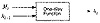

| Previous | Table of Contents | Next |
A one-way hash function, H(M), operates on an arbitrary-length pre-image message, M. It returns a fixed-length hash value, h.
Many functions can take an arbitrary-length input and return an output of fixed length, but one-way hash functions have additional characteristics that make them one-way [1065]:
If Mallory could do the hard things, he would undermine the security of every protocol that uses the one-way hash function. The whole point of the one-way hash function is to provide a “fingerprint” of M that is unique. If Alice signed M by using a digital signature algorithm on H(M), and Bob could produce M’, another message different from M where H(M) = H(M’), then Bob could claim that Alice signed M’.
In some applications, one-wayness is insufficient; we need an additional requirement called collision-resistance.
It is hard to find two random messages, M and M’, such that H(M) = H(M’).
Remember the birthday attack from Section 7.4? It is not based on finding another message M’, such that H(M) = H(M’), but based on finding two random messages, M and M’, such that H(M) = H(M’).
The following protocol, first described by Gideon Yuval [1635], shows how—if the previous requirement were not true—Alice could use the birthday attack to swindle Bob.
This is a big problem. (One moral is to always make a cosmetic change to any document you sign.)
Other similar attacks could be mounted assuming a successful birthday attack. For example, an adversary could send an automated control system (on a satellite, perhaps) random message strings with random signature strings. Eventually, one of those random messages will have a valid signature. The adversary would have no idea what the command would do, but if his only objective was to tamper with the satellite, this would do it.
Length of One-Way Hash Functions
Hash functions of 64 bits are just too small to survive a birthday attack. Most practical one-way hash functions produce 128-bit hashes. This forces anyone attempting the birthday attack to hash 264 random documents to find two that hash to the same value, not enough for lasting security. NIST, in its Secure Hash Standard (SHS), uses a 160-bit hash value. This makes the birthday attack even harder, requiring 280 random hashes.
The following method has been proposed to generate a longer hash value than a given hash function produces.
Although this method has never been proved to be either secure or insecure, various people have some serious reservations about it [1262, 859].
Overview of One-Way Hash Functions
It’s not easy to design a function that accepts an arbitrary-length input, let alone make it one-way. In the real world, one-way hash functions are built on the idea of a compression function . This one-way function outputs a hash value of length n given an input of some larger length m [1069, 414]. The inputs to the compression function are a message block and the output of the previous blocks of text (see Figure 18.1). The output is the hash of all blocks up to that point. That is, the hash of block Mi is
This hash value, along with the next message block, becomes the next input to the compression function. The hash of the entire message is the hash of the last block.
The pre-image should contain some kind of binary representation of the length of the entire message. This technique overcomes a potential security problem resulting from messages with different lengths possibly hashing to the same value [1069, 414]. This technique is sometimes called MD-strengthening [930].
Various researchers have theorized that if the compression function is secure, then this method of hashing an arbitrary-length pre-image is also secure—but nothing has been proved [1138, 1070, 414].
A lot has been written on the design of one-way hash functions. For more mathematical information, consult [1028, 793, 791, 1138, 1069, 414, 91, 858, 1264]. Bart Preneel’s thesis [1262] is probably the most comprehensive treatment of one-way hash functions.

Figure 18.1 One-way function.
Snefru is a one-way hash function designed by Ralph Merkle [1070]. (Snefru, like Khufu and Khafre, was an Egyptian pharaoh.) Snefru hashes arbitrary-length messages into either 128-bit or 256-bit values.
First the message is broken into chunks, each 512-m in length. (The variable m is the length of the hash value.) If the output is a 128-bit hash value, then the chunks are each 384 bits long; if the output is a 256-bit hash value, then the chunks are each 256 bits long.
The heart of the algorithm is function H, which hashes a 512-bit value into an m-bit value. The first m bits of H’s output are the hash of the block; the rest are discarded. The next block is appended to the hash of the previous block and hashed again. (The initial block is appended to a string of zeros.) After the last block (if the message isn’t an integer number of blocks long, zeros are used to pad the last block), the first m bits are appended to a binary representation of the length of the message and hashed one final time.
Function H is based on E, which is a reversible block-cipher function that operates on 512-bit blocks. H is the last m bits of the output of E XORed with the first m bits of the input of E.
The security of Snefru resides in function E, which randomizes data in several passes. Each pass is composed of 64 randomizing rounds. In each round a different byte of the data is used as an input to an S-box; the output word of the S-box is XORed with two neighboring words of the message. The S-boxes are constructed in a manner similar to those in Khafre (see Section 13.7). Some rotations are thrown in, too. Originally Snefru was designed with two passes.
Cryptanalysis of Snefru
Using differential cryptanalysis, Biham and Shamir demonstrated the insecurity of two-pass Snefru (128-bit hash value) [172]. Their attack finds pairs of messages that hash to the same value within minutes.
| Previous | Table of Contents | Next |
){kind=link}
){kind=link}